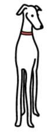
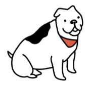

¿CÓMO ES LA CINTURA DE
?

Las costillas y la columna
son claramente visibles.
Con poca o ninguna grasa
o masa muscular.
Con buen promedio
de masa muscular.

Sin cintura y sin caja
torácica visible.
Exceso de grasa sin masa muscular.
Muy delgada
Bajo de peso
Ideal
Sobrepeso
Muy gruesa
Los planes de alimentación personalizados de ALIMENTOS.CR
pueden ayudar a perder los kilos de más.